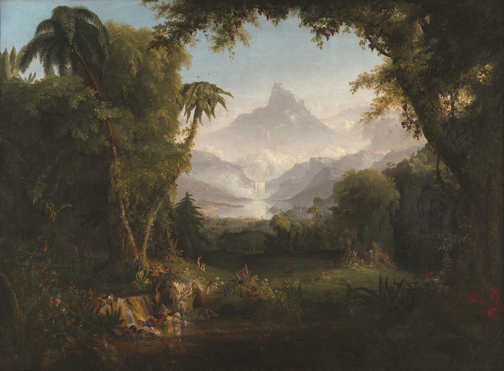

Primii zori
Geneza inefabilă a unei conștiințe

Partituri și înregistrări
Înregistrare
Rezumat
Primii zori, poem electronic, explorează geneza inefabilă a unei conștiințe printr-un univers sonor modelat de cosmologia iudeo-creștină. Din interiorul unui întuneric primordial, muzica urmărește venirea la existență a unui prim Adam, care conștientizează treptat propria persoană, universul înconjurător, și prezența Creatorului.
Fișă tehnică
| Orchestrație | Sintetizatoare și Muzică concretă |
|---|---|
| Text | — |
| Durată | 16:26′ |
| Stare | Finalizată |
| Finalizat | 2022 |
| Premieră | — |
| Interpretat de | — |
| Distincții | Achiziționată de UCMR in sesiunea mai 2022 |
| Copyright | Claudius Iacob |
Note de program
Poemul electronic The First Dawn („Primii zori”) se dorește o incursiune metaforică și supra-muzicală în geneza inefabilă a unei conștiințe. Îmbrățișând (în subtext) cosmologia iudeo-creștină, alcătuirea sonoră urmărește – cumva „din interior” – ființarea, „venirea la existență” a unui prim Adam, însuflețit, sensibil, rațional, capabil să perceapă universul înconjurător, să se perceapă pe sine, și pe Creator.
Ideația de mai sus fundamentează o muzică profund interiorizată, și de o densitate extremă (ceea ce nu o face însă, în mod necesar, criptică sau ermetică); o muzică ce evoluează lent, non-linear, și pe o mulțime de paliere, și parcurge un drum sinuos, de la denotații aurale ale abisului și întunericului (un fel clocot haotic primordial, redat de o „magmă” eterofonă în continuă mișcare și de varii densități) până la formulări sonore iradiante (expresii ale luminii, în variile sale reprezentări: de la fulgurantă, explozivă și orbitoare, până la senină, clară și diafană – vehiculul tehnic constituindu-se aici dintr-o succesiune de pedale armonice spectrale și scurte coraluri microtonale ce vor converge, ultimamente, către unison). În același spirit, materialul intonațional al piesei evoluează pe nesimțite dinspre grav către extremul acut – substanța muzicală sfârșind prin a „sublima”, intonațional și timbral; la fel, microritmia face treptat loc organizărilor ritmice mai consistente și/sau mai decelabile, agitația contenește progresiv, iar timbrul se „purifică”, se organizează și se „subțiază”. Complementar, într-un plan sau univers secund, masei sonore brute descrise mai sus i se opun structuri acordice rafinate, principial diatonice, armonii „solare” cvasi-trisonice decorate discret cu disonanțe non-funcționale. Acestea străpung în puncte cheie materia (sonoră) întunecată, și o ghidează în drumul ei (altfel haotic) spre organizare și devenire. Și parcursul acestui coral fragmentar (poli– și micro-tonal în egală măsură) urmărește, în esență, același principiu generator, structurile sale finale fiind mai acute și mai prelungi decât cele inițiale.
Din punct de vedere tehnic, piesa este construită folosind anvelope sonore programate în sintetizatorul Absynth 5, în combinație cu proceduri clasice de conversie digitală a formelor de undă (supra-eșantionare, modificare selectivă a ratei de eșantionare, filtrare FFT, etc). Ca semnătură componistică proprie aș nota utilizarea neconvențională a reverberației de convoluție, anume prin selecționarea, ca material modulant (sau „impuls”), a unor surse audio inedite. În vreme ce, în mod normal, impulsurile sunt mostre scurte de „ecou” ale unei încăperi, eu am folosit în schimb înregistrări extinse făcute în rezervații naturale. Rezultatul a fost o colorare subtilă a anvelopelor sonore (sintetice, abstracte) cu timbruri de păsări (reale, concrete). În acest fel, am preluat în această piesă cu substrat mistic viziunea lui Olivier Messiaen – aducându-i și un omagiu pe această cale –, care privea toate făpturile înaripate ca pe niște emisari ai divinității.